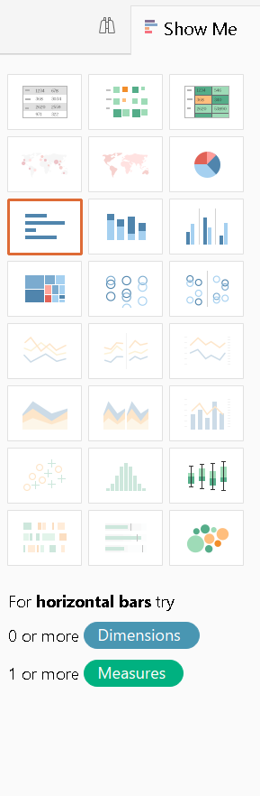
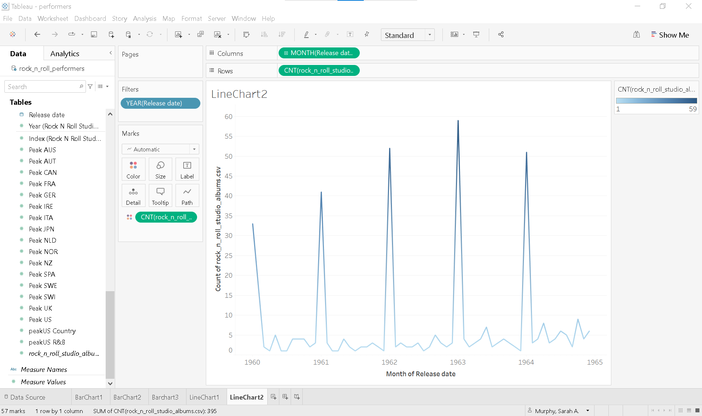
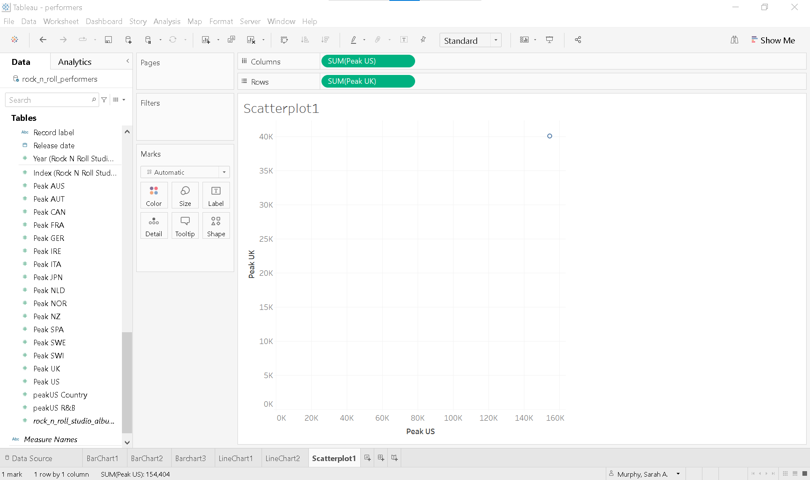
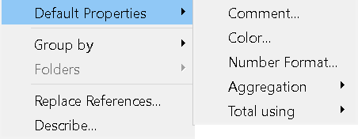
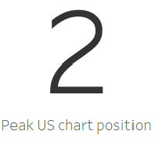

Lesson 2. Choose an Effective Visual
Choosing the right chart isn’t always straightforward — it’s often an iterative and context-dependent process. Effective data visualization requires you to consider both the nature of the data and the needs of your audience. This lesson introduces how to create basic charts in Tableau.
Data skills | concepts
- Tableau
- Working with data
- Analyzing data
Learning objectives
- Select the most effective chart type for your audience.
- Distinguish between discrete and continuous dates and apply this when building line graphs in Tableau.
- Visualize relationships between two variables using scatterplots.
- Create alternatives to crosstabs or text tables for displaying numeric data.
- Discuss the strengths and limitations of data storytelling.
This tutorial is designed to support a multi-session Tableau for Research workshop hosted by The Ohio State University Libraries Research Commons. It is intended to help the ABSOLUTE beginner, or anyone who is relatively new to Tableau to build the skills and confidence to apply Tableau to research projects.
LESSON 2
Data literacy is not about changing your abilities, talents, or skills—it’s about enhancing and empowering you to succeed with data.”
Morrow (2021)
Working with data
Working with data requires patience, practice, and curiosity. If you’re starting with a small dataset with just a few rows and columns, you can begin exploring it by creating simple charts and graphs. But keep in mind: data is often messy and may need to be cleaned or restructured before analysis.
Here are some common data preparation and enhancement tasks:
- Standardizing names, locations, and formats
- Removing unnecessary punctuation
- Eliminating duplicate rows (when appropriate)
- Converting text to consistent case (e.g., all lowercase)
- Replacing null values with zeros or other meaningful defaults
- Standardizing date and time formats
- Splitting or unmerging columns
- Verifying and correcting data types
- Enhancing your dataset by relating or joining it with a relevant external data source (e.g., adding demographic, geographic, or time-based context)
Important! Null Values and Misclassified Data Types
Be especially careful with null values and checking data types. Nulls can skew calculations like averages or medians, and misclassified data types — such as dates stored as integers — can lead to errors in analysis. Always verify that each column has the correct and consistent data type before building your visualizations.
We have already explored how to verify and correct data types in Lesson 1. Since our rock_n_roll_performers.csv dataset primarily contains dimensions, we’ll need to relate it to another dataset with measures to continue exploring Tableau’s full capabilities.
Relate or join data sources
Relationships combine data from multiple tables in a data source based on common fields — without merging them into a single flat table. This approach offers several benefits, including preserving table-level detail and helping to avoid issues like data duplication or incorrect aggregations.
To practice creating relationships and to better understand how they affect the level of detail in your visualizations, consider downloading Tableau’s Bookshop dataset.
Joins in Tableau physically merge tables into a single flat table at the data source level, based on a defined join condition (e.g., inner, left, right, or full outer). While useful when both tables share the same level of detail, joins can lead to duplicated rows or inflated values if the join keys aren’t clean or consistent, so careful data preparation is essential.
For a more in-depth exploration of these concepts, ask Copilot to explain the difference between a relationship and a join in Tableau. Copilot will provide a clear breakdown, along with guidance on when to use a relationship versus a join, depending on your data structure and analysis goals.
Let’s enhance the rock_n_roll_performers.csv dataset by relating it to rock_n_roll_studio_albums.csv.
- Go to the Data Source page.
- In the Connections pane, locate
rock_n_roll_studio_albums.csv.1 - Drag and drop the table onto the canvas.
- In the relationship settings, set the relationship as:
Artist=Artist1.
Video showing steps 1-4 above
Choose an effective visual
Choosing the right chart type is a crucial—and often tricky—step in effective data visualization. Thankfully, a thoughtfully selected set of well-crafted charts can address most communication needs.
The Financial Times Visual Vocabulary offers a categorized collection of chart types. It is a useful reference for selecting the right chart for the needs and expectations of your audience. This section will explore how to create basic Tableau charts in the ranking, correlation, and change over time categories.

Ranking
Ranking shows an element’s position in an ordered list. Horizontal and vertical bar charts are especially effective for visualizing rank-based comparisons, making it easy to see which values stand out.
Tableau loves options—there’s almost always more than one way to do the same thing!!!
📊 Bar Chart
Let’s build a bar chart that highlights the average U.S. peak chart positions for albums by 2025 Rock & Roll Hall of Fame inductees.
- In the Data Pane scroll down to find the
rock_n_roll_studio_albums.csvtable . - Double click Peak US to instantly generate a bar chart showing the total sum of US peak chart positions.
Now let’s refine the chart to focus on specific artists and show average values instead:
- Scroll up in the Data Pane to find the
rock_n_roll_performers.csvtable. - Drag Artist to the Filters Shelf.
- In the filter dialog, select the following 2025 inductees:
- Drag Artist to the Columns Shelf.
- On the Rows Shelf, click the ▼ caret on SUM(Peak US) and change the aggregation form SUM to AVERAGE.
- Right-click the sheet tab and rename it BarChart1.
Video showing the steps 1-6 below
Understanding Tableau pills
In Tableau, dimensions appear as blue pills and measures as green pills. Adding a dimension (like Artist) disaggregates the data in your view. Many Tableau features—such as formatting, sorting, or converting data types—are accessed by clicking the ▼ caret on a pill.

Build a bar chart that displays the peak U.S. chart positions for each album released by your favorite artist inducted into the Rock and Roll Hall of Fame.
-
Open a new worksheet
-
Click the worksheet icon next your Barchart1 tab in the lower-left corner of the Tableau workspace.
-
Rename the sheet:
-
Right-click on Sheet2 and rename it BarChart2.
-
Build your bar chart.
-
Use the album_title dimension and the Peak US measure to create a bar chart showing chart positions for each album.
-
Experiment with layout:
-
Click the
 Swap button in the toolbar to switch the orientation of the bars (horizontal ↔︎ vertical).
Swap button in the toolbar to switch the orientation of the bars (horizontal ↔︎ vertical).
-
Sort the bars:
-
Use the Sort ascending
 button in the toolbar to arrange bars from lowest to highest chart position.
button in the toolbar to arrange bars from lowest to highest chart position.

Show Me
Another way to create a bar chart in Tableau is by using the Show Me  button located in the upper right corner of the workspace. Before clicking Show Me, hold down the Ctrl key (or Option key on a Mac) while selecting one or more dimensions and/or measures. Tableau will then highlight the chart types that best match your selection.
button located in the upper right corner of the workspace. Before clicking Show Me, hold down the Ctrl key (or Option key on a Mac) while selecting one or more dimensions and/or measures. Tableau will then highlight the chart types that best match your selection.
If you pre-select artist, album_title, and Peak US, for example, Tableau will automatically suggests horizontal bar charts as a suitable visualization.

- Open a new worksheet and rename the sheet BarChart3.
-
Build the initial view:
- Drag Release date to the Columns shelf.
-
Drag rock_n_roll_studio_albums.csv (Count) to the Rows shelf.
Note: Tableau automatically creates a line chart, because Release date is recognized as a date field.
-
Change the chart type:
- On the Marks Card, click the dropdown next to Automatic and select Bar.
Change over time
📈 Line chart
Line charts are ideal for showing trends over time. When you place Release date on the Columns chelf and rock_n_roll_studio_albums.csv (Count) on the Rows shelf, Tableau automatically generates a line chart—because it recognizes Release date as a date field.
Tableau classifies fields as either discrete or continuous, and this classification affects both the type of chart Tableau creates and how you interact with your data. You can identify the classification by the pill color:
- Blue = Discrete
- Green = Continuous
This distinction is especially important when working with dates, as they can be treated either way.
📅 Discrete dates
Let’s walk through an example using discrete dates:
- Create a new worksheet and rename it LineChart1.
- Drag Release date to Columns and rock_n_roll_studio_albums.csv (Count) to Rows.
- Notice that Release date appears as a blue pill, indicating it’s being treated as discrete.
- The pill is labeled YEAR(Release date) and is prefixed with a +, meaning it can be expanded.
- Expand the date hierarchy:
- Click the
+next to YEAR to add QUARTER. - Click the
+again to add MONTH. - Tableau automatically parses discrete dates into parts: year, quarter, month, day.
- Click the
- Clean up the view:
- Remove YEAR, QUARTER, and DAY from the Columns shelf by dragging them off.
- Add a filter for specific years:
- Right-click and drag Release date to the Filters Shelf.
- In the Filter Field window, select YEARS and click Next.
- Choose 1960-1964, then click OK.
- Again, Tableau uses blue and green to indicate discrete versus continuous dates.
- Add color by year:
- Hold Ctrl (or Option on Mac) and drag YEAR from the Filters shelf to the Color shelf on the Marks card.

Note:The bulk of albums released in January is misleading. When gathering this data, if only a year was provided for release data, the month and day of the release date was automatically set to January 1.`
📅 Continuous dates
Now let’s see how the view changes when Release date is converted from a discrete to a continuous date.
- Duplicate the existing sheet:
- Right-click on LineChart1 and select Duplicate.
- Rename the new sheet LineChart2.
- Convert the date field:
- Click the ▼ caret on the MONTH(Release date) pill.
- Change the date from the discrete format (e.g. Month (May)) to the continuous format (e.g. Month (May 2015)).
At first glance, the chart may look broken or disjointed. However, if you hover over each line, you’ll see that Tableau is correctly plotting each month across all years on a continuous timeline. The visual choppiness due to the color still being based on the discrete year.
To smooth out the visualization and better highlight trends:
- Remove the YEAR(Release date) pill from Color.
- Add color based on values:
- Drag a copy of rock_n_roll_studio_albums.csv (Count) to Color shelf on the Marks card.
This change applies a diverging color palette based on the count values, helping to highlight highs and lows in the data. The result is a smoother, more insightful trend chart that emphasizes variation over time.

Correlation
░ Scatterplot
Tableau automatically displays data at the highest level-of-detail available when creating a view. This behavior is especially noticeable when using scatterplots to analyze relationships between two or more measures.

To break down or disaggregate the data point, add a lower level of detail to the view.
Create a scatterplot to compare the Peak US and Peak UK chart positions for albums released by your favorite artist inducted into the Rock and Roll Hall of Fame.
- Open a new worksheet and rename it Scatterplot1.
-
Build the scatterplot:
- Drag Peak US to the Columns shelf.
- Drag Peak UK to the Rows shelf.
-
Filter by artist:
- Drag Artist to the Filters shelf and select your favorite artist.
-
Add detail:
- Drag album_title to Detail on the Marks card.
By adding album_title to Detail, you increase the granularity of the view. Now, each mark (circle) represents a unique album, plotted by its Peak US and Peak UK chart positions. This allows for more detailed and meaningful comparison across individual albums.
Outliers can significantly distort the results of a scatterplot, so it’s important to handle them thoughtfully. Tableau makes it easy to exclude outlier data points: simply click on a mark to open the tooltip and select 🛇 Exclude, or right-click the mark and choose X Exclude.
However, always be sure to document your approach to handling outliers. Transparency in your data-cleaning decisions is essential for maintaining the integrity and reproducibility of your analysis.
Formatting
Enhance the clarity and visual appeal of your scatterplot using the Marks card:
- Add a dimension to Color (e.g.,
album_titleorrelease year) to visually group or differentiate data points. - Change the mark type from Automatic to Circle for a cleaner, more focused design.
- Apply a dark gray border and reduce opacity to 60% for a layered, professional appearance.
- Increase the size of the circles to improve visibility and emphasis.
- Hide null indicators to remove albums with missing US or UK chart data.
These small adjustments can significantly improve the clarity and aesthetic appeal of your visualization.
Video showing scatter plots steps 1-4 and formatting tips
Text table
A text table is not a data visualization. When used appropriately, however, a text table can complement visual elements by providing precise values, detailed comparisons, or supporting context that enhances the overall understanding of your data.
Let’s walk through how to create a text table that displays the the peak chart positions in every country for each album released by The Beatles.
- Start a new worksheet and rename it TextTable.
- Filter the data:
- Drag Artist to the Filters shelf and select The Beatles.
- Select the relevant fields:
- Click on album_title
- Hold Ctrl (or Cmd on Mac) and click Peak AUS
- Then hold Shift and click Peak US to select all measures between them.
- Open Show Me and select Text Tables.
- In the Toolbar, change the view from Standard to Entire View .
- Adjust the width of the album_title column for better readability.
What Tableau does behind the scenes
- A blue Measure Names pill now appears on the Columns shelf.
- A green Measure Values pill is placed on Label on the Marks Card.
- Each selected measure now appears on a separate Measure Values card under the Marks Card.
Customizing the table
- Reorder columns by dragging measures on the Measures Values card.
- Remove a measure by dragging it off the Measure Values card.
To save time and ensure consistency, try setting Default Properties for dimensions and measures before starting a Tableau project.
- Right-click on each measure that begins with “Peak”.
- Scroll to Default Properties, and select Number Format.
- Choose Number Standard from the formatting options.
This ensures that all selected measures display in a consistent numeric format throughout your workbook, reducing the need for repetitive formatting later on.
Callout numbers
Sometimes one large, single number can make the most powerful statement in a data visualization. Callout numbers are used to highlight key takeaways and can be easily created in Tableau with a few formatting steps.
Let’s create a callout number to emphasize the Peak US chart position for The Beatles’ album Abbey Road.
To emphasize the Peak US chart position for The Beatles album Abbey Road:
- Duplicate the existing sheet:
- Right-click the TextTable sheet tab and select Duplicate.
- Rename the new sheet Callout
- Simplify the view:
- Remove all Measure Values starting with “Peak” except SUM(Peak US).
- Filter to a single album:
- In the view, right-click Abbey Road and choose ✔ Keep only.
- Format the number:
- Right-click on the number (e.g., 2) and select Format to open the Formatting Pane.
- From the Fields ▼ dropdown in the Formatting Pane, select SUM(Peak US).
- Under Font, increase the font size from 9 to 72.
- Under Alignment, set the horizontal and vertical alignment to Center.
- Clean up the view:
- Drag album_title from the Rows shelf to Detail on the Marks card.
- Add a caption:
- Right-click in the gray space under the Marks card and select Caption.
- Double-click the Caption area to edit it.
- Delete defaulat text and type:
Peak US chart position. - Highlight the text and select center in the edit caption window.
With just a few additional formatting tweaks, you’ll have a clean, impactful callout number ready to be featured in your Tableau dashboard.

Supplemental readings
Overview

- by Jonathan Schwabish
- New York : Columbia University Press, 2021.

- by Cole Nussbaumer Knaflic
- Hoboken, New Jersey: Wiley, 2015.